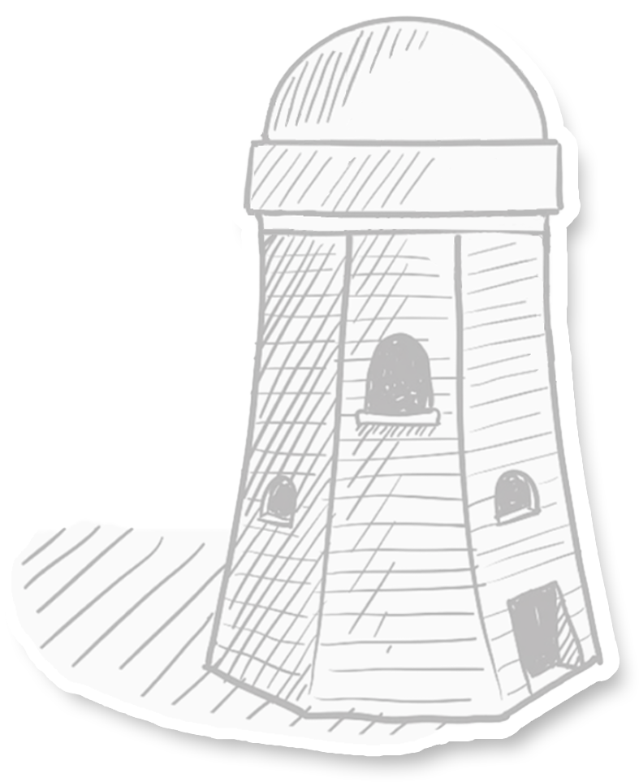

提起游戏，
大多数人第一时间想到的就是——娱乐，
轰轰烈烈、冲突激荡，让人肾上腺素飚升的娱乐。
但是，还有一些游戏，
更强调情感、更体现共情。
它们不断拓宽着游戏作为“第九艺术”所能涵盖的边界，
承载着创作者对世界的的探索与表达。

在这个游戏越做越像，只围绕充值进行开发的环境中，
独立游戏不随其流，野蛮生长，
近年来佳作频出：
《拣爱》、《太吾绘卷》、《戴森球计划》……
不同主题、不同类型、不同叙事风格的独立游戏，
为玩家不断带来丰富的游戏体验。
游戏的世界里充满无限的可能，
但创作游戏的世界却并非如此，
当真正聚焦到游戏背后进行创作的一群人，
我们发现现状远比想象中复杂。
在这条艰难探索的路上，
困难屡见不鲜，机遇倏忽而至，矛盾与灵感并行，
“出师未捷身先死”的也并不罕见。
有人说，不要看独立游戏这几年出了很多爆款，但无声无息死掉的游戏不计其数；
也有人说，独立游戏人其实没有那么惨，质量好的都能活下来；
他们的真实处境是怎样的？
从1695款国产独游以及与12位开发者的交流中，
我们试图勾勒一场关于国产独立游戏的冒险之旅。
“我们还有很多东西没做，还想继续下去。”
2015年从网易游戏辞职回到老家后，王剑一直想着做一点“自己的东西”。之前做商业游戏的经历让他觉得商业游戏完成任务式的感觉很没意思。也是在这时，他玩到一款叫做《去月球》的独立游戏，让他备受鼓舞，他想一个没做过游戏的都能做一款好的游戏，他这个做过几年的应该也可以。抱着这样的想法，王剑开始了他的独立游戏人之路。
2022年，他和团队制作的游戏《透视梦境空间》终于面世。但此时，他想的不是游戏能卖出多少份，而是希望团队能够活下去，“这不是开玩笑，是真的要活下去。” 《透视》早期的开发依靠朋友的资助才得以继续，王剑希望这款游戏可以有好一点的成绩，这样兴许还能有机会和时间继续做下去。
但没过几天，本来就只有两个人的团队只剩下了王剑一个人。

隐性
独立游戏团队的规模各不相同，一人团队通常由一位开发者独立完成游戏的设计、编程、艺术和音效等工作，小团队人数不等，但一般不超过10人。较小的团队更加灵活和高效，能够快速决策，沟通效率更高；人数多一些的团队则通常具备更多的资源和专业技能，有能力开发更为复杂的项目。
然而在实践中，个人开发者会不可避免地遇到更重的工作负担、时间压力、能力的限制等新的问题 。这让部分开发者转向了团队合作。
但尽管做好了克服团队内部协调和沟通问题的准备，开发者们接下来要面对的现实是：开发者内部存在着严重的职能分布不均，这就为团队的组建带来了新的问题。
“其实在制作的过程中，我一直在各个软件的贴吧招人，但是至今没人回复。”
于是，找不到人的朱恒开始了多面手修炼之路。19岁就成立工作室的朱恒在19年的开发者日志里写到，“俗话说的好，狗急跳墙，逼急了什么都得干。没有美工，自学3ds Max，没有视频剪辑，自学Pr。好像一个人就是一支军队一样。”

（点击查看）
第三条
由于资源和团队规模的有限，独立游戏开发者往往需要在多个职能间兼顾。比如，一个人可能需要同时负责美术和程序两方面的工作，或者一个小团队的成员需要同时负责游戏设计和测试等多个角色。而这种职能不均可能就会导致某方面的工作质量因此受到影响，毕竟每个人擅长的领域和技能都有限。
《丸霸无双》就是这样一款典型游戏，游戏中的人物没有复杂的配饰，躯干和脑袋都是简单的球体，再随便加几笔，人物的脸就这样成型。它荒诞、抽象，仔细看还有些诡异，好像在跟玩家开一个魔性的玩笑。
制作人于大进将自己游戏的画风概括为“四岁简笔画”，他说，“只有自己，美术搞来搞去不满意，最后就‘破罐子破摔’了。”
游戏行业用3A来评价那些高成本、高体量、高质量的大作，但独立游戏制作人没有经济来源，没有人手、经验，想要活下去有时必须找些“野路子”。尽管美术设计聊胜于无，《丸霸无双》却还是让人忍不住想玩下去，其中原因或许就在于魔性的画风中人物的简洁反而给了动作设计更多发挥的空间，方便设计出优越的打击感和技能。这款游戏最终获得了售出8万份的好成绩。
拿着《丸霸无双》挣来的钱和一些个人储蓄，于大进成立了三个人的工作室，开发了一部新游戏《黄老饼梦游惊奇》。这款游戏好评如潮，反馈不错，从销量来说在独立游戏中也算得上成功，但于大进坦言：“两年投进了80万，到现在也还没有回本。” 80万的成本还是几经压缩的结果，他每月要给团队成员支付薪水，交办公室的租金，尽管他已经把薪水压倒很低，但去年年底资金最终还是没能周转过来。
与寥寥无几的人手相伴的是窘迫的经济状况。在游戏开发者大会GDC上，曾有开发者分享过一组数据：接近82%的个人开发者从游戏平台获得的收入低于去打一份工的收入；而仅有7%的独立游戏工作室能通过发售的第一款游戏，赚到能维持工作室继续生存下去的钱。
《拣爱》的作者亚恒说，“这个行业最最共性的就是没钱。”《戴森球计划》的开发团队当初甚至买不起一台4K显示器。《拯救大魔王2：逆流》的开发者夜神不说话分享过自己的开发经历，作为游戏的主要制作人，他需要提前垫付给音乐美术程序的工资，支付包括房租水电在内的场地费用，购买游戏开发需要的各类授权、商标、软著等，而这些，就已经花费了他个人积蓄的二十几万。和业内的许多制作人一样，在制作的这些年，夜神不说话也是通过在其他地方赚钱来补贴做游戏的费用。
而起码他们的工作室是有每月薪水的——在一份业内独立游戏人互相寻求伙伴的共享文档中，半数以上的团队都在“为爱发电”。
第三条
为爱发电指团队不支付薪资，一般是游戏上线后再分成。这意味着直至游戏获得收益，开发者都很难获得任何经济支持，还要一起承担项目开发、设备运行的成本——是真正的“输血支持”。
但创作本身就是一个看不到结果的过程，独立游戏的开发更是充满不确定性。制作一款游戏的周期往往以年为单位，热爱在不安和纠结中被现实不断消耗，最后往往只剩下退却。
“我现实里有一些事情必须要解决。”
“工作忙。”
“得学习了。”
成员们退出制作组，大概都是这样的理由。
“为爱发电”听起来给人一种满腔孤勇的奉献感，但很多时候它却演变成以热爱为名的剥削。这并不健康，也不利于行业的长远发展，但现实中独立游戏开发者们面对的就是这样的困境。独立游戏的开发是一个充满无力感的过程，“我们努力在以后争取早日摆脱为爱发电的状态。”
一款独立游戏有多难成功？需要达到怎样的条件，才能存活下去？现在，你将化身为一名独立游戏制作人，你需要考虑怎样组建你的团队，如何确定游戏的定价，在开发的过程中，你会遇到随机事件，助力你的游戏，或是……
请记住，你的每一个决定，都会影响你的游戏能否存活！好了，现在，祝你好运！

在很多人眼里，独立游戏制作人是一份非常自由的职业，不用每天坐班，没有996，上班时间可以自行决定，最重要的是可以尽情发挥创意，把无数脑洞放入自己的游戏中。但硬币总有另一面，被人们熟知的大多是已经成功的意气风发者，更多面临不稳定经济条件的开发者隐匿在人们的视野之外。
于是为了稍作补贴，众筹成为一种选择。众筹的目标金额一般不会太高，1万元是国内游戏众筹最常见的数字，但大多数团队得到的会更多一些。一些相当优秀的独立游戏也走过这条路，2021年占据国游销量榜前三，销售额过亿的《戴森球计划》在摩点网上发起众筹，当时他们只期待筹到2万元，但最终收到了109566元。

第三条
2014 年底陈虹曲在摩点发起了独立游戏《Grow》的众筹，成为中国独游众筹的标志性开端。当时设置的众筹目标仅仅是 1 万元，而哪怕只是对一款简单的休闲游戏而言，这个金额其实都不足以负担成本。对更多开发者来说，“哪怕没有资金支持，也会把游戏做下去。”
运用精彩的美术和与众不同的玩法，《Grow》想要构建一个陪伴植物种子破土生长的过程，希望玩家能够在游戏的过程中体会到成长的感受。带着这样的创意与坚持，2015年的中国独立游戏嘉年华大赛中，《Grow》被评为最佳移动游戏。
同样因众筹而得以坚持下去的还有《微光之镜》的开发者踢踢。和大多数独立游戏开发者一样，踢踢也经历了一开始分身乏术，硬着头皮边做边学的过程，在游戏开发步入正轨前，他们耗费了近两年的时间不断地实验踩坑。立项后，他每天花费10-18个小时在制作游戏上，这样坚持两年后，游戏终于有了阶段性的成果——上半部分的内容已经初具规模。他打算在这个阶段开启众筹。团队一开始设置了1万元的众筹目标，而这个目标，短短几天之内就被打破，最终这个游戏收获了72万元的众筹资金。这让踢踢感到受宠若惊，他频繁地在B站更新游戏的动向和开发日记，也让很多玩家目睹了一款独立游戏从创意到成型的全过程。经过5年多的开发，《微光之镜》成功落地，踢踢也终于实现了最初的梦想。
当《巴别号漫游指南》拿到版号时，他们已经等待了530天。
2021年10月，按照出版社的建议，《巴别号漫游指南》的制作人宇添里里外外仔细调整过游戏内容后，将材料递了上去。此时的宇添还不知道有多少个漫长的白日与焦虑的夜晚在等待着他——他还算得上乐观，或者说，仍然对版号这回事没什么概念。
在预期里，他觉得《巴别号》这个游戏没有任何敏感内容，不用太久一定能收到修改意见，改一改再提交上去，2022年内一定可以拿到版号，让游戏顺利面世。然而随着时间流逝，迟迟没有任何反馈传来，他只能等。

第三条
糖小渣和她的团队甚至等待了近三年，因为内容的敏感性，她们的游戏《谍：惊蛰》从题材到审批过程都几经波折。“民国”“谍战”两个关键词让这款游戏成为了重点审批对象。
每个周四，策划、文案、运营一起钻进上世纪四十年代的上海，逐段逐句抠字眼，帮助主角陈山——这个上海街头的小混混，戒掉了烟和酒，成为新时代的文明青年。
“开发一年半，版号等三年”，她说，“我至今怀念每一个埋头修改所有的‘杀’和‘死’的日子。”
2018和2021年是游戏版号的两次寒冬。18年的寒冬从4月持续到11月，先是没有新的进口网游版号发放通过，随后国产网络游戏版号也停止发放。 版号停发了267天，截至12月，排队等待版号的游戏已经达到了4200款。而《谍：惊蛰》在21年送审时，赶上了第二次寒冬，这次，版号接连7个月停止发放。这次的版号寒冬还与疫情相互交叠，带来的影响是深远而广泛的，根据天眼查APP的数据显示，从2021年7月下旬到年底约5个月的时间内，共有14000家游戏相关公司注销。
在版号停发7个月后，22年4月，回暖的迹象似乎终于出现，这个月新闻出版署发放了45个版号，但到下一个月，这个数字再次变为0。
第一条
滑到第二条变图
第三条
我们统计了近三年在全球数字游戏软件发行平台steam上发行的国产独立游戏（在steam上发行游戏不需要申请版号），每个季度平均有50个以上，而在国内，能获得版号的游戏每季度都没能超过20个。
发放的版号和需要发行的游戏之间存在着巨大的数量差，每年发放的客户端版号甚至比不上steam上一个季度的游戏发行数。
这样的大环境下，小作坊的独立游戏，只好将游戏开发和运营转向海外。对于开发者来说，申请版号高昂的审核和自查成本，是将游戏上线的困难模式。相较之下，向steam平台提交99美元的保证金，接受35%的抽成，就可将游戏直接发布在其平台上，成为了更大一部分开发者的选择。
在版号限制发放的境况下，steam这样的平台给独立开发者提供了另外一种选择。实际上，《巴别号》团队准备海外版本也有一段时间了，他们想，如果不能获得版号，就放弃国内市场。尽管这意味着前期等待获得版号的大龄时间和金钱成本打了水漂，也意味着游戏会失去大量的预期收入，但“这也是没办法的事情”。
在开发者们看来，这个行业，“变化是常态，矛盾也是常态。”
于大进说：“我们没有办法做出一款游戏，然后等半年到两年，并且具体是多久都不确定，等版号下来之后我们再正规上架，这个成本对我们来说实在是太大了”，拖一天就是一天的成本。
中国人的独立游戏无法上线国内应用商店也许是一种遗憾，但steam的存在让中国的游戏能直接面向更大的海外市场。在这样的境况下，中国的开发商也逐渐在steam占据越来越重要的位置，这或许也是一种塞翁失马。
“我们没有办法做出一款游戏，然后等半年到两年，具体是多久都不确定，等他版号下来之后我们再正规上架，这个成本对我们来说实在是太大了。”
中国人的独立游戏很难上线国内应用商店也许是一种遗憾，但Steam的存在使得中国的游戏能直接面向海外，本身也提供了全球性的视野，在这样的境况下，中国的开发商也逐渐占据越来越重要的位置，这或许也是一种“塞翁失马”。
“但我们仍然期待更好的未来”
五成或四成，这是发行商的抽成比例。虽然和发行商合作能为游戏带来更高的曝光度，但赚10块给5块的高额分成还是令很多游戏人望而却步。1695款国产独游中，超过1000款的开发和发行是同样的人，很大一部分开发者是在独立进行宣发。
因为没有发行商的宣传能力，他们只能尝试自己找一些媒体和游戏领域的KOL，给对方发试玩寻求反馈。游戏媒体撰稿人Alonso透露，一些游戏会主动联系，请求他们报道，撰写推广软文。而对于游戏媒体来说，游戏本身的质量非常重要，“如果做得好，甚至可以免费帮忙宣传。”
还有一种宣传方式就是社群运营。通俗点来说就是在独立游戏玩家和开发者群中分享游戏相关的消息，这种宣传方式也被戏称为“草根宣传”。草根宣传的优势在于可以接触到真实的个人玩家，游戏《高塔逃脱》在发行前拉了10个群，会在群里定期抽一些群友来体验游戏，群友也很高兴，同时开发者能够获得群友反馈的数据，在不公布给大众的情况下完成游戏错误的调试。
草根宣传也是成本最低的一种宣传方式，开发者有时像发传单一样，在QQ群里发送自己的作品链接，请求游玩，但不同于发传单的是，群里的大家一般都会给予温暖的回应。QQ群是游戏人的社群聚集地，草根宣传是最朴素也是最常见的宣传方式，在你来我往的呼应中，是游戏热爱者之间的声援与鼓励。
《溯光行》的制作人谈到，“有一个玩家曾经给我们发了一篇很长的反馈，足足长达7页的图文并茂的ppt。其中有些建议很尖锐，很有针对性，对我们其实是有很大帮助的。我们看到这篇反馈的时候第一时间是震惊，震惊之余是感动。因为这些人是真心希望你的游戏能做的出彩的。所以就算只是回应这些玩家的期待，我们也要把游戏给做好。”
但不是所有的自行宣发都能如此简单。第三种宣传的方式是联系游戏领域的KOL（意见领袖），找他们做直播、做实况、做视频推荐。以ACG文化为核心的B站是独立游戏开发者经常光顾的平台。“这是我的游戏要不要试玩一下，还可以的话能不能帮我们推荐两句。”
但我们通过调查发现，超过百万粉丝的游戏UP主一支视频宣传的报价往往过万，是独立开发者难以负担的价格。
但这种宣传有时也很简单，《拣爱》的制作人亚恒提到，“其实你去拜托，只要你的游戏够好，大家都是会去帮你的，其实国内大家对独立游戏还是比较热心的。” 这款在今年年初爆火的游戏，打动了不少人。尤其当B站头部UP主中国BOY专门为《拣爱》做了一期视频后，游戏销量很快上升——游戏发售前，亚恒不太有自信地向兼职帮忙的其他开发人员保证“游戏肯定至少卖5000份”，实际上心里却在打退堂鼓，“能卖2000份就够了”，幸运的是，上线三周，《拣爱》的销量就突破了一万份。
《喵之旅人》是陆睢及其团队的毕业设计，这款仅由几个大学生做出来的游戏曾登上东京电玩展，也联系到了发行商，但仍然不能避免被盗版的命运。“发行商会帮我们解决大部分盗版问题，独立宣发者则会面临更大的困难。”
为了了解具体的情况，我们统计了近十年的1695款国产独游，它们的均价在27元，但在淘宝上，仅仅不到10元就可以买到其中的多个游戏。
第三条
一款游戏经过漫长曲折的开发才能够成功上线，但麻烦和问题并不止步于此。多数独立游戏上线后，就面临着被盗版的风险。独立游戏开发者往往没有足够的资源来开发强大的游戏保护技术，这使得游戏在发布后容易被破解和复制。与此同时，市面上还存在着盗版团队专门研究破解技术。破解软件、破解版游戏在互联网上很容易找到，玩家可以不费太大功夫就免费获得原本需要付费购买的游戏。
当然，支持正版是（普世价值观中）毋庸置疑的共识，在现实中盗版游戏仍然有着数量庞大的用户和市场，在知乎的一个问题“如何看待正版游戏和盗版游戏的抉择”下，大量的回答表现出了“玩盗版可耻，但一些情况下可以理解，就算用也悄悄用”的态度。
《我的世界》创始人Notch也思考过玩家游玩盗版游戏这一问题，而Notch的态度是：“没事，玩吧，将来买得起的时候再买。但不要忘记心怀内疚。” 也许全球超2亿份的销量给了Notch这份豁达，但对于销量和火爆程度远不及《我的世界》的大多数独立游戏来说，被盗版就意味着制作人难以从游戏中获得合理的收入和利润。由于独立游戏基本是买断制，很少有内置广告，付费下载就是唯一的收入来源，所以盗版横行给小规模的独立游戏开发者带来的重要影响之一就是难以维持游戏开发和后续项目的资金来源。
既然盗版带来的负面影响如此之大，为什么许多游戏开发者不选择去维权呢？答案很简单，就是两个字——不值。开发者当然苦盗版问题久矣，但一旦决定起诉侵权者，就要耗费大量时间、精力、金钱，而结果很可能是无法直接取得赔偿，或是赔偿仅仅是损失的九牛一毛。
在没有足够经验或精力的情况下，小型团队投诉很难成功，一些开发者会直接放弃。亚恒表示，虽然自己的作品一直有被侵权，但从来没有发起过投诉，“投诉的流程十分麻烦复杂，作为作者的我们需要举证和做大量手续。”
而业内律师表示，曾经接到过一些独立游戏团队的维权诉讼需求，“但不少团队在咨询之后就打退堂鼓了，因为结果不能确定，并且诉讼周期可能会拉长到1-2年，而在这期间团队能不能坚持生存都还是一个问题。”

在实际的判决中，侵权的认定并不简单。一款游戏的构成复杂，能够涉及侵权的就有代码、文字、画面、剧情、美术素材等各种方面。这些都为游戏“整体侵权”的认定提高了难度。同时，证明侵权所需的大量证据收集成本高、难度大，更重要的是，现有的法律法规对于著作权侵权的赔偿标准仍较为模糊，并且对于一些恶意侵权者，较低的赔偿金额也无法起到有效威慑的作用。
前年8月，国内多家独立游戏厂商联合发布了一份“国产独立游戏反淘宝盗版联合声明”，指出阿里巴巴平台未经审查，擅自允许侵权商家售卖未经授权的游戏产品乃至盗版游戏产品。在声明发布的当天，声明发起者及拟定人邓永进请其它参与的厂商统计19年8月至今，两年来因盗版蒙受的经济损失——40余家国内游戏研发商提供的数据显示，这个金额，高达1.8亿。
“盗版危害肯定存在，但对产业影响到底多大我不敢判断。有没有独立游戏开发者被盗版游戏逼至放弃，也许永远不会再发生，也许已经发生了，只是我们并不知道。”在反淘宝盗版声明发布两年后，邓永进透露，“淘宝方面并没有给出什么改善动作”。
尽管如此，一些独立游戏开发者仍然在采取各种措施来抗击盗版。于大进表示自己做了很多技术方面的尝试，在上架steam的时候就做了一些防盗版的机制，但后来有一次在网上搜索自己的游戏时，发现“随便一搜就能搜到很多盗版链接”。发现盗版之后，他主动去百度网盘上把这些盗版游戏下载下来，在亲自试玩后，于大进明白了自己的防盗版机制形同虚设——有多少防盗版的机制，就有多少能够破解的方法。
还有一些开发者通过建立社区和粉丝基础，提供更好的用户体验来提高玩家购买正版游戏的意愿，一定程度上减少盗版的损失。但这些终究只是隔靴搔痒，大多数时候，面对猖獗的盗版，游戏制作人们也无可奈何。
在发现淘宝上一块五就能买到盗版游戏的压缩包时，于大进尝试举报维权，他在淘宝后台一条一条地去提交申诉，然后淘宝官方进行审核，有时候淘宝还会认定他没有资格，如果再进行申诉，还可能会出现同样的情况。
“而即便是你把这些事情解决了，他只会选择不玩你的游戏，而不会选择购入正版”，于大进说。
盗版环境的背后，是买断制市场与意识的错位。
维权难，盗版易，几乎已经成了行业的一种常识，面对盗版，更多的人是麻木。有的开发者会通过技术在盗版游戏中植入一些额外的内容，在游戏《亿万僵尸》中，盗版用户的基地会自爆产生僵尸，他们甚至给这个功能制作了特效动画。这样的举措，是开发者在无奈处境下的自嘲。
杂货店的财务预算有一项叫做盗窃损失，某种程度上，盗版游戏带来的影响就像盗窃，它是开发者在游戏制作之前就要计算的损失，也是目前无法避免的存在。“你只能这么想，这是一种自我麻痹的方式。”
尽管近几年游戏行业在迅猛发展，但针对原创游戏进行保护的法律法规仍然屈指可数。著作权法仍是目前保护原创游戏的主要法律依据。但在2020年，著作权法进行了新的修订。与之前相比，新的著作权法加大了对原创的保护力度，侵权者赔偿的限额也有所提高。
当回过头来再看这群游戏背后的开发者，我们发现他们面对问题自有一条歪歪扭扭的解决路径。没有资金就一起众筹，没有版号就上steam发行，宣发困难就口耳相传，各种信息的交流互通也是一种默契。尽管现实好像总是在作对，但他们却总能表现出惊人的坚韧，没有钱，没有人，没有关注，但就这样野蛮地生长。
于是最后我们说，独立精神就是追求自我表达的一场义无反顾。这些创作者们筚路蓝缕，为一个创意踏上一场冒险之旅。
十年前，我们有仙侠《轩辕剑》，我们有江湖《修仙传》，现在，我们有更多类型、更多题材的游戏。因为这样一群执拗的灵魂，今天，我们能听到更多的声音，为更多精彩的内容感动，为各种奇思妙想拍案叫绝。


独立游戏与音乐、电影一样可以让人热泪盈眶，很多人对游戏有误解，游戏不只是娱乐，它可以是一款开发玩家脑力释放玩家潜力的游戏，也可以是一款艺术化地展现社会问题的游戏，它有更多的可能性，它是每一位独立创作人在与世界分享自己的生命与热爱。
我们可以进入到《喜丧》中，亲身探索一场热闹背后隐藏的拐卖与罪恶的真相；可以走进《拣爱》的世界中，做出每一个爱或不爱的抉择；可以进入《抑郁的房间》，感受每一次情绪的微妙波动。
每款独立游戏都是制作人自我表达的一种特殊方式，可能它们并不完美，没有精美的画面和通俗易懂的情节，但每一件都是独一无二的艺术品，凝结着独立游戏人的心血。它们因梦想而生，因创意而存在，而这些看似偏执的独立游戏人则成为了游戏行业发展真正的先驱力量。
每一个独立游戏都是制作人的一次自我表达，它们可能并不完美，没有精美的画面和抓人的情节，但每一个都是独一无二的艺术品，凝结着独立游戏人的心血，它们因梦想而生，因创意而存在，也不断推动着游戏可以探索和讲述的边界。
作为文明史上第一个可以让观众深度参与的主流艺术形式，游戏的艺术表现力还有广阔的发展空间，而如果这个艺术形式一直停留在玩物的阶段，反而是一种可惜。
而为了不确定的理想和一腔热血赌上今天的全部的人是值得尊敬的。


采访：柳肖君、李诗雨
数据：葛韵枫、李映霖、方扬
可视化：葛韵枫
美工：葛韵枫
网页：方扬、李映霖
文案：葛韵枫、李映霖
/ 指导老师 /
戴玉老师 刘萍老师
/ 特别鸣谢 /
王海波老师
/ 出品 /
中国传媒大学新闻学院
参考文献
[1] 中国游戏产业研究院. 2020年中国游戏产业报告[R].广州：中国音数协游戏工委(GPC)，2020
[2] 中国游戏产业研究院. 2021年中国游戏产业报告[R].广州：中国音数协游戏工委(GPC)，2021
[3] 中国游戏产业研究院. 2022年中国游戏产业报告[R].广州：中国音数协游戏工委(GPC)，2022
[4] 伽马数据. 2022年中国游戏出海情况报告[R].广州：中国音数协游戏工委(GPC)，2022
[5] 伽马数据. 2023中国游戏产业趋势及潜力分析报告[R].广州：伽马数据，2023
[6] 崔鹏志.独立游戏圈“围剿”盗版 雷声大雨点小？[N]. IT时报，2021-08-27（004版）
[7] 李磊.将网络游戏作为独立的作品类型予以著作权保护[N]. 海南日报，2022-03-08（A10版）
[8] Indienova. indienova国内独立游戏开发者报告2020[EB/OL]. [2021-02-12].
[9] 伽马数据. 2018年独立游戏发展状况报告[EB/OL]. [2018-11-06].
[10] 帕斯亚科技等. 国产独立游戏反淘宝盗版联合声明[EB/OL]. [2021-08-18].
[11]《离开网易后做了4年独立游戏，现在的目标仍旧是“活下去” | 对话制作人》
[12]《19岁独立游戏制作人：做游戏是我对抗这个世界的方式。》
[13]《用五毛钱的美术，也能做出好玩的游戏》
[14]《一个国产独立游戏等待版号的530天》、《等待版号的这3年》等访谈资料